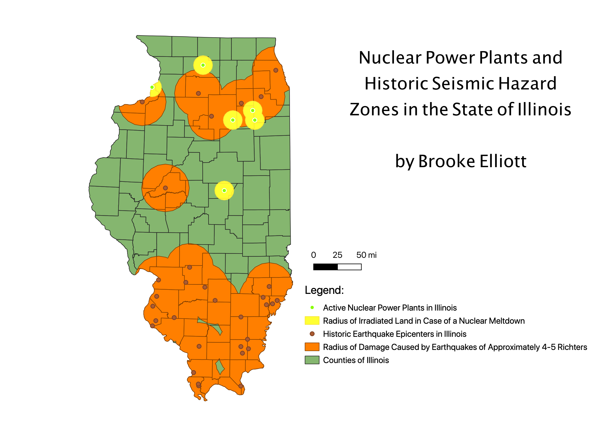

Nuclear Power Plants and Historic Seismic Hazard Zones in the State of Illinois
by Brooke Elliott
This map depicts historic seismic hazard zones in Illinois and their intersections with active nuclear power plants, which are vulnerable to
seismic activity. Earthquakes are capable of causing meltdowns and complications in the operation of a nuclear power plant, and when determining where to
build a plant, experts must ensure that they are not too close to fault lines and areas of high seismic activity. The buffers were created to represent
the distance at which damage can be caused by a 4-5.5 Richter scale earthquake and the distance at which local land will be irradiated in case of a
nuclear meltdown. This map is in the projection EPSG 6454, a meter-based local projection for Illinois.

Here is a link to the website where I procured this data: https://mapcruzin.com/nuclear-power-plant-earthquake-shapefiles/ and clearinghouse.isgs.illinois.edu/data/reference/illinois-county-boundaries-polygons-and-lines
Download the data used for this project:
Compressed Files Created by Me